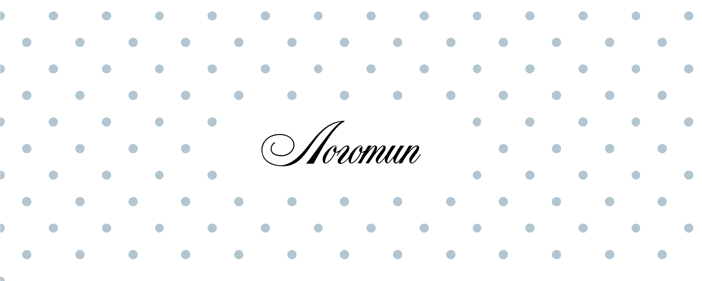
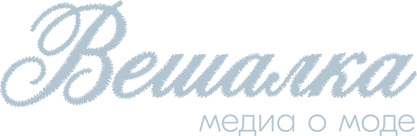
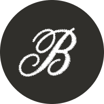
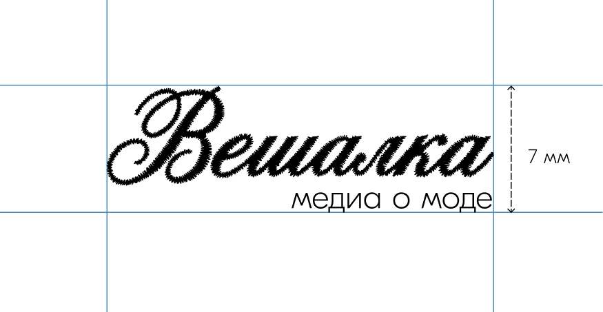
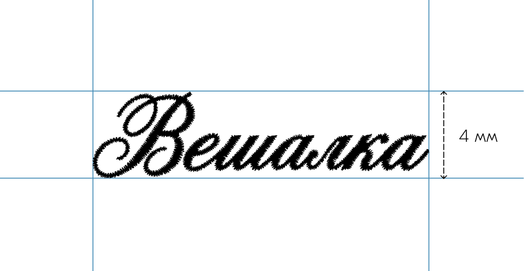
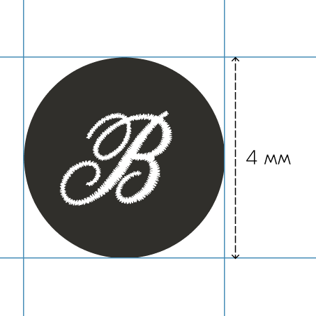
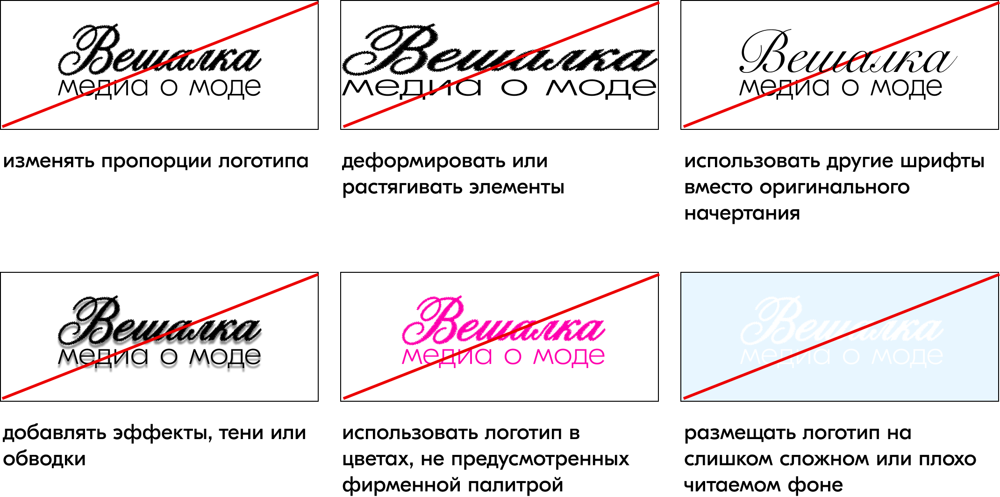

Логотип «Вешалки» отражает основную идею проекта — соединение моды, ручной работы и современной digital-среды.
В его основе лежит сочетание выразительной типографики и визуальной метафоры вышивки, которая проходит через всю айдентику бренда.
Название «Вешалка» было выбрано как понятный и узнаваемый образ, связанный с одеждой, гардеробом и повседневной жизнью. В контексте проекта вешалка становится символом опоры и структуры: она помогает организовать вещи, а медиа помогает ориентироваться в моде, трендах и визуальной культуре.
Основная версия логотипа состоит из фирменного начертания «Вешалка» и подстрочника «медиа о моде». Подстрочник помогает точнее считывать сферу проекта и используется в большинстве основных носителей: на сайте, в социальных сетях, презентационных материалах и печатной продукции.
Фирменное начертание было создано на основе декоративного шрифта с последующей авторской обработкой. После подбора шрифта слово «Вешалка» было дополнительно стилизовано с помощью генеративных инструментов для создания эффекта машинной вышивки. Затем графика была переведена в векторный формат и доработана вручную для дальнейшего использования в айдентике.
Такой подход позволил сохранить ощущение текстильности и ручной фактуры, оставаясь при этом в рамках цифровой визуальной системы.
Разрешённые модификации

Разрешается использование основного логотипа в фирменных цветах бренда, если это не нарушает читаемость.
Разрешается использование основного логотипа без подстрочника, когда пространство ограничено или подстрочник становится плохо читаемым.

Разрешается использование буквы «В» из логотипа, заключённой в окружность.
Охранное поле
Безопасная зона логотипа эквивалентна высоте буквы «a» со всех сторон.
Минимальные размеры



Запрещается:
